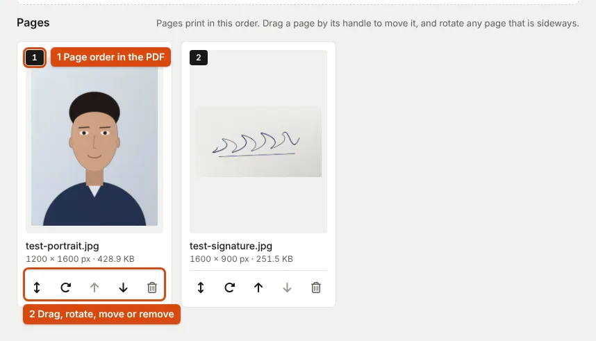

How to Combine Certificates into One PDF in the Right Order
Many portals want one PDF per document, not one PDF for everything. When a form does ask for a single file, here is how to build it so every page is readable and the size fits.
First, check whether the form wants one file
Many portals have a separate upload slot for each document, each with its own limit. UPSC lists every certificate with its own file name and a 50–300 KB PDF limit (UPSC: Instructions for uploading documents). NEET (UG) 2026 lists the Class X certificate, category certificate and others as separate PDFs of 50–300 KB (Information Bulletin, p. 16). IBPS asks for the 10th certificate as one PDF on A4 pages, up to 500 KB (CRP PO/MT-XVI).
If the form has one slot per document, prepare one PDF per document, and do not merge them. Merge only when the form asks for a single file, or when one document has several pages, such as a marksheet with a reverse side.
Step 1: Decide the order
Use the order printed in the notice: reviewers often check documents in that order. The document checklist shows how to list every upload from the notice before you start. If the notice gives none, a sequence that reads naturally is identity proof, highest qualification, earlier qualifications (most recent first), category or domicile certificates, then experience letters. Name the page images in that order, for example 01-identity.jpg, 02-degree.jpg, so the order is visible before you start.
Step 2: Capture each page properly
Photograph or scan each page flat, straight and in even light, crop away the table around it, and rotate it upright. A merged PDF is only as readable as its worst page. Scanning documents with a phone camera covers light and angle.
Step 3: Build the PDF
In image to PDF, add the images, drag them into order or use the move buttons, and rotate any page that came in sideways. Then choose the page settings:

| Setting | For documents |
|---|---|
| Page size | A4, unless the notice names another (IBPS asks for A4) |
| Margin | Small, so the document fills the page and its text stays large |
| Image quality | Start at Balanced and check the size |
The quality setting decides most of the file size. We built the same two-page A4 PDF (a portrait and a signature photo, small margins) at each setting: High produced 618.4 KB, Balanced 227.5 KB and Compact 136.3 KB. Balanced was under a third of High, and for typed certificates the difference in readability is usually small; check the smallest text to be sure.
Step 4: Check the file before uploading
- Scroll through every page: none blank, upside down or cut off at the edge.
- At 100% zoom, read the smallest text: dates, roll numbers, percentages.
- Compare the size with the limit. If it is over, try the next lower quality first. If that is still too large, see compressing a PDF for upload portals; if it is under a minimum (UPSC and NEET (UG) set 50 KB), use a higher quality setting.
- Rename the file as the form requires. UPSC requires exact names such as
board_certificate. - Keep the page images, so you can rebuild the PDF if a portal asks for a re-upload.
Frequently asked questions
Can I add an existing PDF to the merge?
The image to PDF tool combines images (JPG, PNG, WebP). Turn a PDF page into an image first, or upload it in its own slot if the form allows.
The pages are different sizes. What happens?
Each image is fitted onto the chosen page size within the margin, keeping its shape, so nothing is stretched. A small certificate on A4 has white space around it; use a small margin to keep it as large as possible.
Should I add a cover page?
Only if the notice asks for one. Under a size limit, spend the bytes on readable documents.
Sources
- UPSC: Instructions for uploading documents, certificate file names and 50–300 KB PDF limit
- NTA: Information Bulletin NEET (UG)-2026, p. 16, certificates as PDF, 50–300 KB
- IBPS: CRP PO/MT-XVI notification, Annexure III, 10th certificate as A4 PDF up to 500 KB
- Library of Congress: PDF 2.0, ISO 32000-2, what a PDF is
Measurements on this page come from running ApplyReady's own tools on the synthetic test images described in the editorial policy. Found a mistake? Report an error.